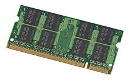

La memoria de acceso aleatorio (Random Access Memory, RAM) se utiliza como memoria de trabajo de computadoras y otros dispositivos para el sistema operativo, los programas y la mayor parte del software. En la RAM se cargan todas las instrucciones que ejecuta la unidad central de procesamiento (procesador) y otras unidades del computador, además de contener los datos que manipulan los distintos programas.
Se denominan «de acceso aleatorio» porque se puede leer o escribir en una posición de memoria con un tiempo de espera igual para cualquier posición, no siendo necesario seguir un orden para acceder (acceso secuencial) a la información de la manera más rápida posible
a) RAM estática asíncrona.
Es una memoria volátil, de acceso rápido que puede almacenar y leer información su característica es que la hace ideal para ser memoria principal en los ordenadores, la celda de almacenamiento de la SRAM contiene 4 transistores MOS que almacenan 1 y 0 mientras se mantenga la alimentación del circuito.
b) RAM estática síncrona
Utiliza la misma tecnología que las SRAM, con lo que son volátiles y de rápido acceso. La diferencia es que existe una señal de reloj que sincroniza el proceso de lectura y escritura. Las memorias cache externas de algunos microprocesadores son de este tipo para facilitar el acceso de datos en modo ráfaga y acelerar el proceso de acceso a bloques de memoria.
c) RAM Dinámica.
La DRAM tiene capacidades que accede con un solo transistor, en vez de celdas con varios transistores. El problema es que las capacidades se descargan mediante la corriente de pérdidas de transistores y aparte son lentas comparadas con la SRAM; tienen una estructura de forma de matriz, estando multiplexadas las direcciones en forma de filas y columnas, tienen modos de acceso más rápido en lo que suministra la parte alta de dirección; este modo de acceso se denomina modo página y acelera el acceso al no tener que suministrar para cada acceso la dirección de página completa.
